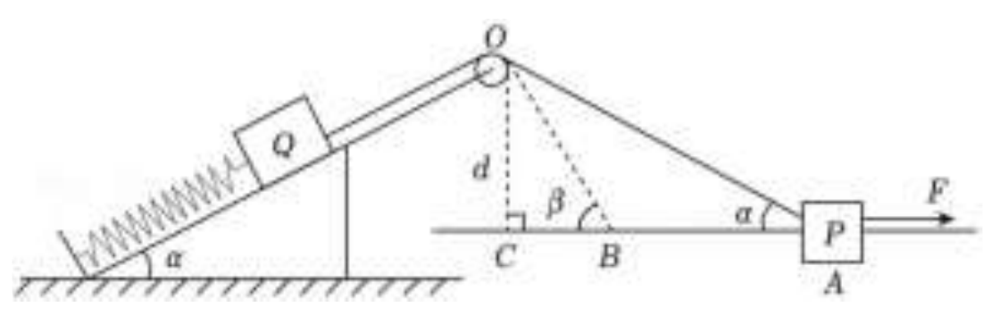
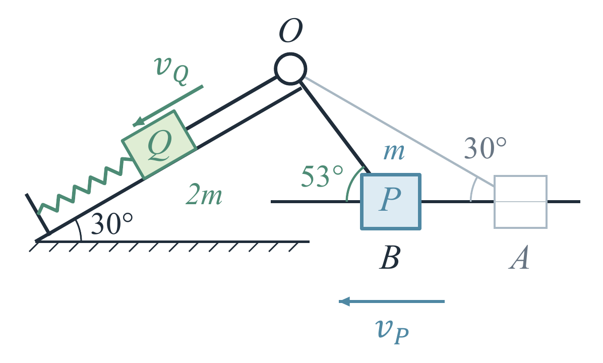
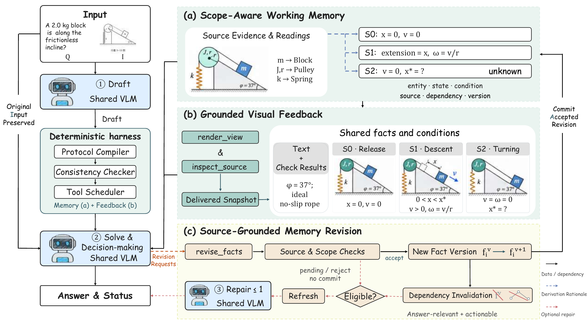
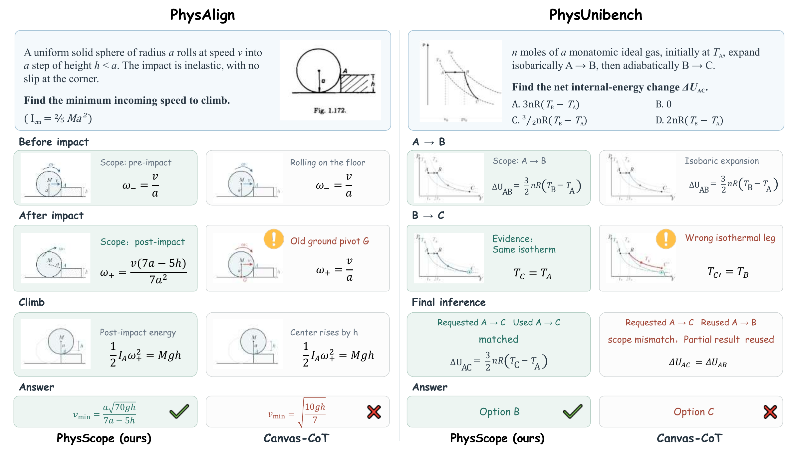

When does a premise apply?
A model can read both angles in a physics diagram correctly and still substitute the wrong one into an equation.
In the pulley problem above, block P starts at A. When it reaches B, the rope makes a steeper angle with the rod. Reusing the initial 30° angle gives the wrong speed for Q, even if every subsequent algebraic step is correct.
PhysScope records which objects, states, and conditions a premise refers to. The 30° reading remains available for questions about A. A calculation at B uses the 53° reading associated with B.
View the source diagram and its state annotation


How PhysScope works
PhysScope gives a vision-language model a working memory it can inspect and revise at inference time. The model weights stay fixed.


- Record the scope
- On the first call, the model reads the problem and proposes physical facts. The harness records each premise with its source, state, and conditions of use.
- Show the relevant state
- For the second call, the harness delivers the evidence, checks, and supported diagrams drawn from those same records. Unresolved quantities remain visible as unknowns.
- Recheck what depends on a revision
- Correcting a source reading requires a fresh inspection. If the correction is accepted, the harness marks dependent equations and views as stale. An eligible issue can trigger one follow-up call.
Two ways to lose the scope


A change of pivot
A rolling sphere hits a step. The pre-impact rolling relation applies on the floor. To work out whether the sphere climbs, the solver needs its angular velocity just after impact about the corner.
A change of endpoints
A gas expands from A to B and follows an adiabatic path from B to C. A and C have equal temperatures. Their internal-energy difference is zero even though the energy changes along the first leg.
Experimental results
All six backbones earn more solving credit with PhysScope on the 986-problem PhysAlign evaluation. The size of the gain varies by model.
PhysAlign
SolveAcc (%)| Backbone | Direct | PhysScope | Gain (pp) |
|---|---|---|---|
| Gemini-3.8-flash | 21.31 | 30.70 | +9.39 |
| GPT-5.6-sol | 71.08 | 88.03 | +16.95 |
| DeepSeek-V4.1-Flash-1017 | 69.85 | 90.94 | +21.09 |
| Qwen3.5-9B | 12.12 | 23.39 | +11.27 |
| Qwen3.5-27B | 18.39 | 24.54 | +6.15 |
| InternVL3.5-14B | 12.71 | 14.54 | +1.83 |
SolveAcc averages normalized problem credit, including partial credit on open-ended problems. With Gemini-3.8-flash, Canvas-CoT scores 21.36%, compared with 30.70% for PhysScope. Tables 1–2
Transfer to PhysUniBench
On 1,024 external problems, Gemini-3.8-flash answers 384 correctly with direct solving and 534 with PhysScope. This evaluation scores the final answer as correct or incorrect.
What changes when scope is removed?
On a fixed subset of 512 PhysAlign problems, removing scope management leaves content recognition at 93.75%, while SolveAcc falls from 41.15% to 24.31%. Separately, removing dependency invalidation lowers SolveAcc to 35.71%. Table 4
Cite PhysScope
@misc{liu2026physscope,
title = {{PhysScope}: Agentic Multimodal Physics Reasoning with Grounded Visual Memory},
author = {Haoyang Liu and Kecheng Liang and Xinyu Li and Weixing Chen and Yang Liu},
year = {2026},
eprint = {2611.23010},
archivePrefix = {arXiv},
primaryClass = {cs.AI},
doi = {10.48550/arXiv.2611.23010},
url = {https://arxiv.org/abs/2611.23010}
}